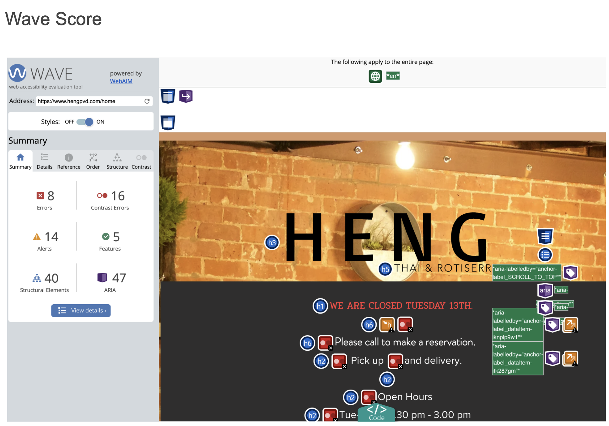
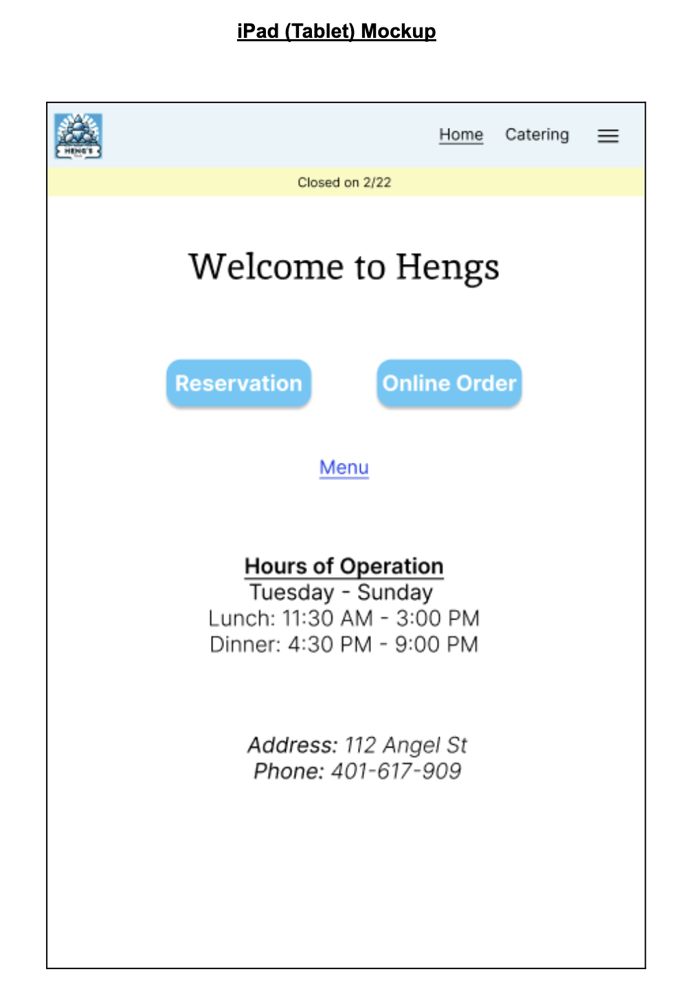
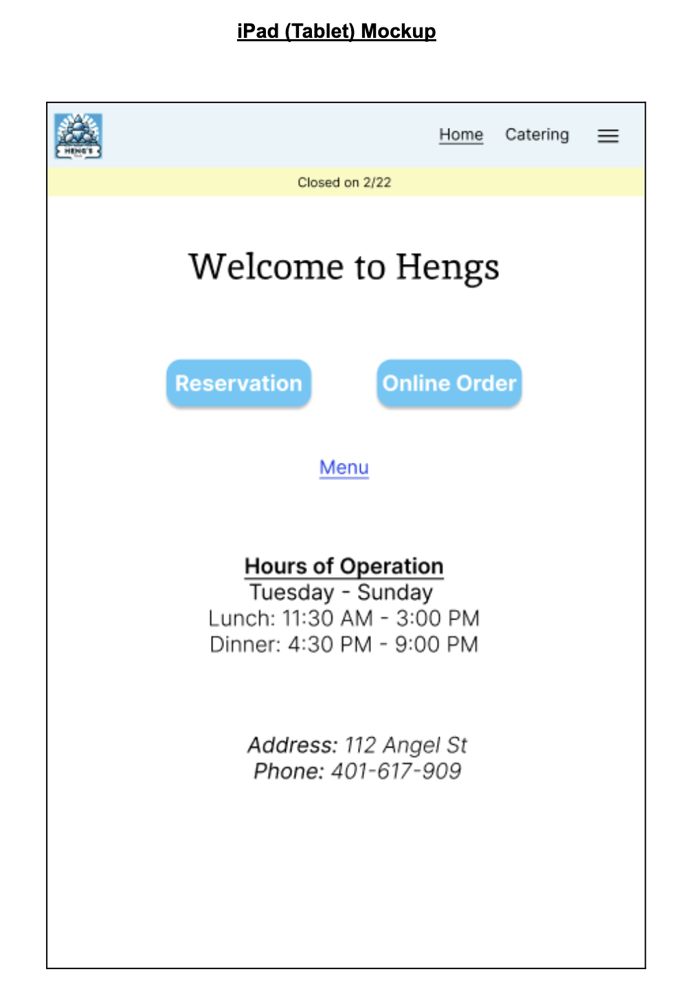

Redesigning a Website
I chose to redesign the Hengs Thai restaurant website. The current website had issues with contrast/readability, content discovery, and usability. Improving the website could potentially increase visitor traffic and takeout/delivery orders.

Links: Hengs Original Website
Detailed reasons for choosing this website include addressing usability and accessibility problems:
- Low Readability: Although Lighthouse gives this website an Accessibility score of 92, the Heng’s website has poor contrast, misaligned texts, and is overall hard to read.
- Bad Information Hierarchy: It is hard to understand the hours of operation in the format its currently written in, and there is conflicting information such as a ‘Call for Pickup’ phone number along with an ‘Order Here’ button. Which one should the user click?
- Poor Layout
- Useless and Repetitive Information at the bottom of the page: Hours of operation are mentioned again and a Contact Us form is provided with a half-working button (Literally half of the button is clickable and the other half is not and is greyed out)

I agree with the Wave analysis, specifically contract errors and structural element problems. The headers are all over the place, form labels are missing, and contrast is poor on several places such as the navbar. It does miss a few things such as the half-working submit form button at the end of the page.
My redesign of the website in low fidelity:
When converting these designs into high fidelity I optimized for accessibility, information hierarchy, and layout

 


You can find the redesigned website deployed here:
Links: Redesigned website